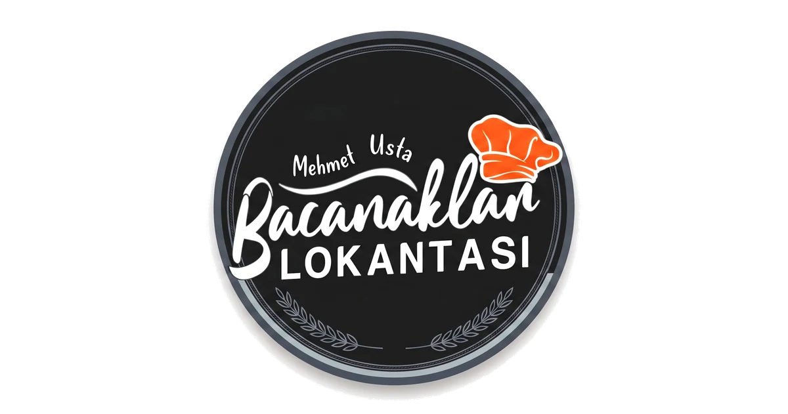
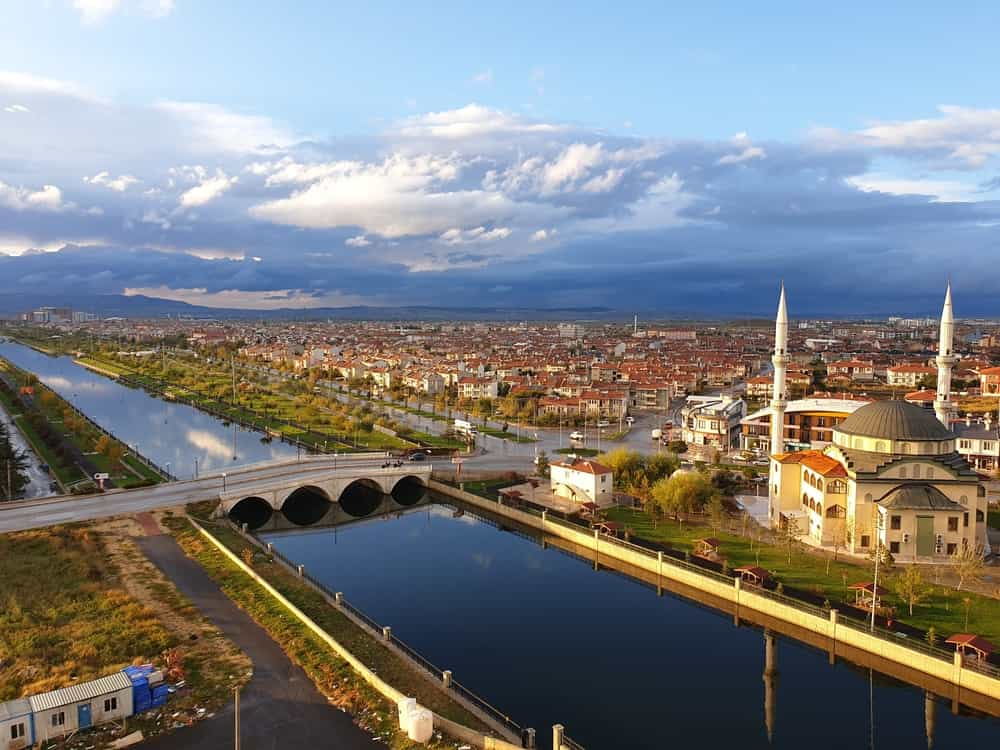

Bugün ne yiyelim?
Çorbalar, ev yemekleri ve tatlıları tek sayfada inceleyin; menü içinde yemek adına göre arama yapın.
Menüyü açAnne eli değmiş gibi doğal, en taze malzemelerle her sabah sevgiyle kaynayan çorbalar ve içinizi ısıtacak ev yemekleri. Lezzet şölenine davetlisiniz.

Yapay hiçbir malzeme kullanmadan, tıpkı evinizdeki gibi taptaze sebzelerle ve ağır ağır kaynayan kemik sularıyla çorbalarımızı hazırlıyoruz.
Kazanımızın buharı, lokantamıza adım attığınız an içinizi ısıtacak o samimi atmosferin ta kendisidir. Derdimiz hızlı tüketim değil; unutulmaya yüz tutmuş o gerçek anne yemeği lezzetini yaşatmak.
Katkısız, yerli üretim malzemeler.
Asla ertesi güne bırakılmaz.

Bacanaklar'ın çorbalarından ev yemeklerine, menümüzden seçtiğimiz lezzet kareleri.
Güncel tabaklar, mutfaktan kareler ve Bacanaklar'dan paylaşımlar için Instagram hesabımıza göz atın.
Instagram'ı AçMenüden konuma, çalışma saatlerinden iletişime kadar en çok ihtiyaç duyulan bilgiler.
Çorbalar, ev yemekleri ve tatlıları tek sayfada inceleyin; menü içinde yemek adına göre arama yapın.
Menüyü açCumhuriyet Mahallesi, İsmet İnönü Caddesi 57/A adresindeki lokantamıza tek dokunuşla rota oluşturun.
Yol tarifi alGelmeden önce harita üzerindeki işletme kaydını ve ziyaretçi değerlendirmelerini görüntüleyebilirsiniz.
Haritalarda görüntüleAfyonkarahisar Merkez'de, Park Afyon'un karşısında; Cumhuriyet, İsmet İnönü Cd. 57/A adresindeyiz.
Pazartesi-Cumartesi 08.00-04.00, Pazar 19.00-03.00 saatleri arasında hizmet veriyoruz.
Kelle paça, işkembe ve tandır gibi çorbaların yanında günlük ev yemekleri ve geleneksel tatlılar bulunuyor.
Sayfanın altındaki Ara, WhatsApp ve Yol Tarifi düğmelerini kullanabilir veya iletişim sayfamızı açabilirsiniz.